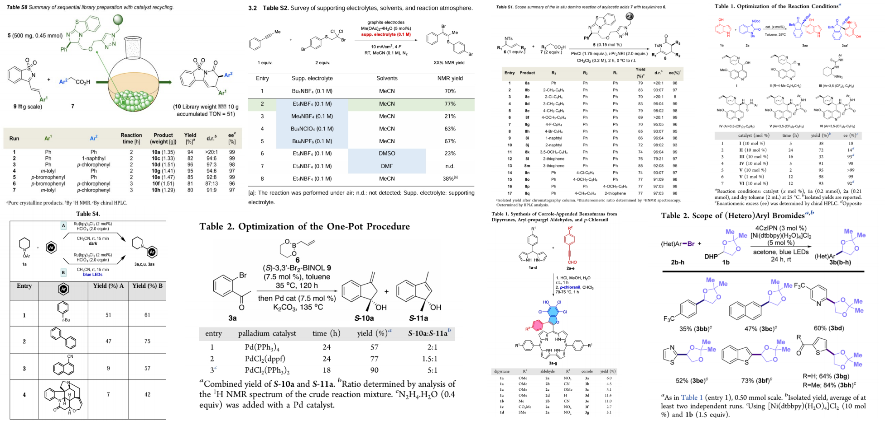
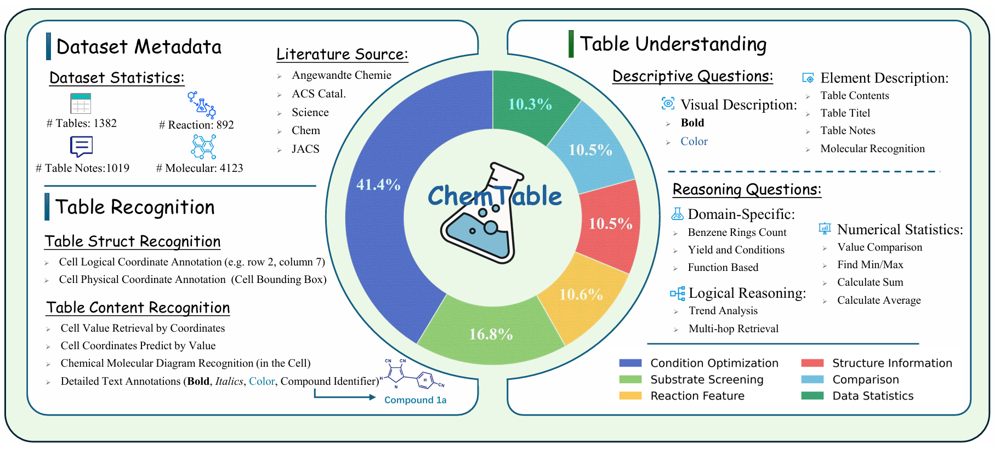
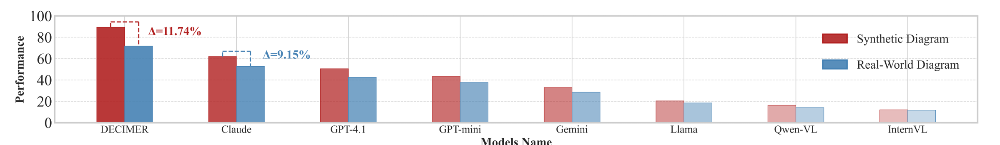
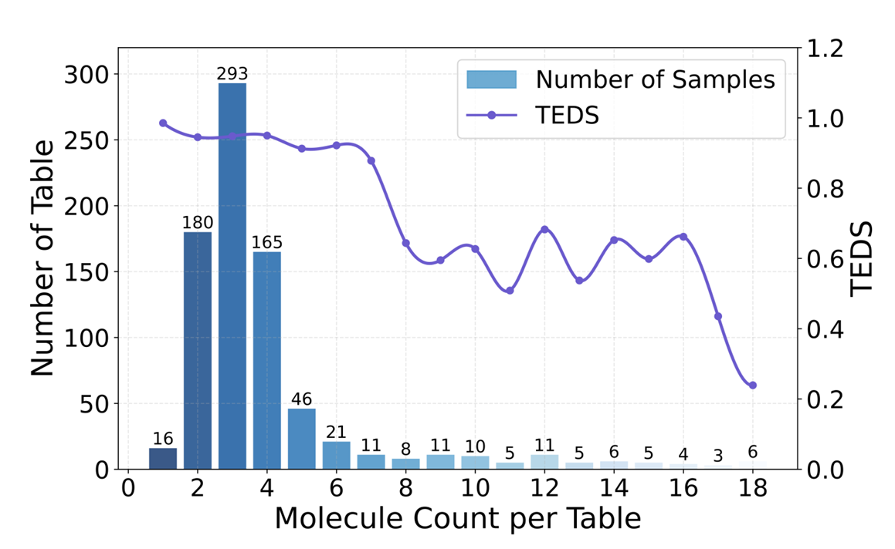
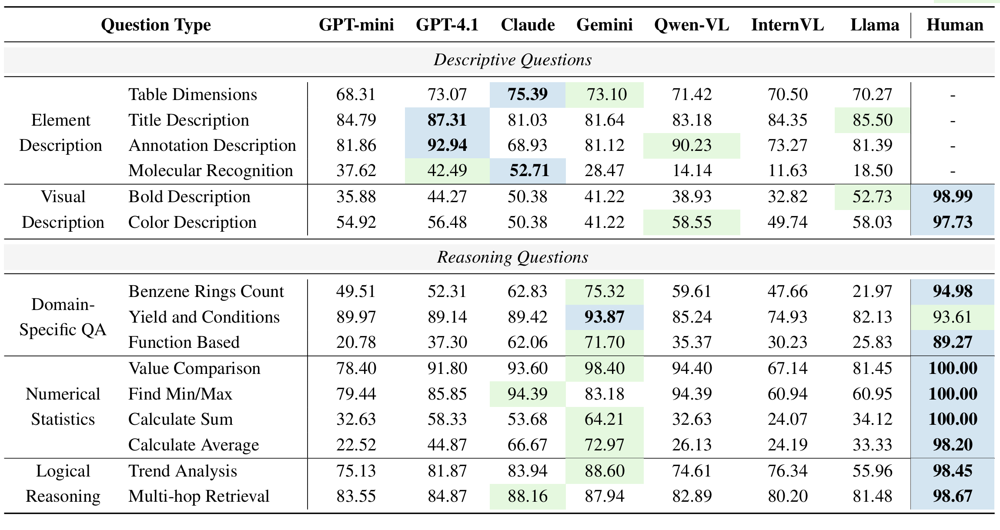
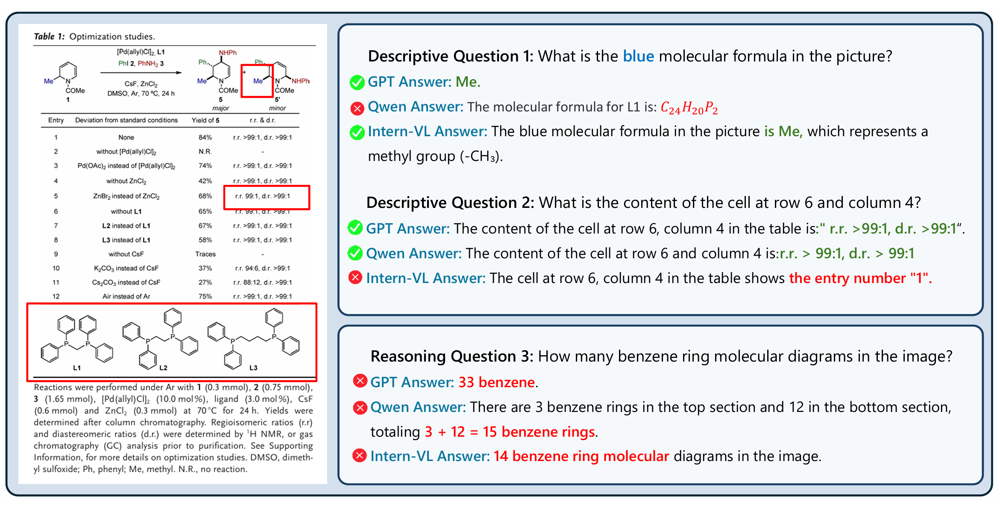

多模态大型语言模型（MLLM）在AI4Science中正被寄予厚望，人们期待它们能像人类专家一样，从海量科学文献中快速、准确地汲取知识。然而，在化学研究的实践中，有一种信息载体，它简洁、高效，却也极其复杂，常常成为AI理解的“拦路虎”——那就是化学实验表格。这些表格，远非简单的行列数据。它们通过密集的符号表达式（如催化剂、配体）、结构化的变量（如温度、时间、产率）以及嵌入其中的分子图形，编码了复杂的实验知识和设计逻辑。它们充满了领域特有的缩写、隐式的表达约定和与脚注的联动。要真正“读懂”一张化学表格，需要模型能够同时理解其视觉布局、解析其结构化内容、识别嵌入的化学结构，并结合领域知识进行逻辑推理。
然而，现有的AI基准测试在很大程度上忽略了化学表格这种高度多模态和领域特定的复杂性，导致我们对MLLM在这一关键任务上的真实能力知之甚少。为了填补这一空白，今天介绍的研究，为我们带来了ChemTable——一个大规模的、源自真实世界化学文献的表格理解基预准。
本文亮点速览
- 首个化学表格综合基准ChemTable：构建并发布了一个包含超过1300个真实化学表格的大规模基准，专门用于评估MLLM在化学表格识别（Recognition）和理解（Understanding）方面的综合能力。
- 深度多模态与领域特定设计：ChemTable的标注极其详尽，包含了单元格多边形、逻辑布局、领域特定标签（试剂、催化剂、产率等）和嵌入的分子图形，并设计了从基础描述到复杂推理的超过9000个问答实例。
- 系统性揭示当前MLLM的局限性：通过对一系列主流开源和闭源MLLM的评估，论文清晰地揭示了它们在处理化学表格时的显著性能差距——不仅与人类专家相比存在巨大鸿沟，开源与闭源模型之间也差异明显。
1. 为什么要做这个？化学表格被忽视的AI能力“试金石”
尽管近期的AI基准越来越关注科学图表（charts & figures）的理解，但表格（tables）——这一在化学文献中同样关键、信息密度极高的模态——却在很大程度上被忽视了。化学表格是实验设计、反应条件和最终结果的浓缩表示，单单一列表格，就可能蕴含着一个小型研究项目的核心信息。
其复杂性远超普通表格：
- 内容多模态：单元格内不仅有文本和数字，还常常嵌入2D分子结构图或反应式。
- 语言高度专业化：充满了化学符号、试剂配体的缩写（如“BINAP”, “TFA”）和领域术语。
- 结构与语义复杂：依赖隐式约定（如“>19/1”这样的产率比值格式）、脚注中的例外说明以及复杂的逻辑关系。
要准确无误地解读这样的表格，AI模型必须具备将符号、数字和视觉信息在化学领域知识的框架下进行对齐和推理的能力。这对于未经专门训练的通用MLLM来说，是一个巨大的挑战。现有的表格识别基准，大多要么关注通用的表格结构识别（如ICDAR-2013），要么侧重于从维基百科等通用领域表格中进行问答（如WikiTQ, WikiSQL），缺乏对化学领域这种独特复杂性的覆盖。因此，构建一个能够真实反映化学表格挑战、并能系统评估MLLM相关能力的基准，对于推动AI在化学领域的深度应用至关重要。
2. 本文的方法是什么？ChemTable的精心构建与任务设计
ChemTable的构建遵循了严谨、系统的方法论，旨在打造一个高质量、高信息量的基准。

- 高质量的数据来源与分类 (参考原文Fig. 2)：
研究团队从ACS Catalysis, JACS, Chem, Angewandte Chemie, Science等顶级化学期刊中，系统性地收集了超过1300张真实的化学表格。这些表格根据其主要功能被手动分为六大类，如条件优化表、底物筛选表、结构信息表等，其中优化和筛选表占据了大多数。

- 三阶段的深度标注流程：
为了捕获化学表格的视觉布局和化学语义，ChemTable的标注过程分为三个精细的阶段：
- 粗粒度标注：首先，对表格的五个主要组成部分——标题、反应式、化学物质、表格主体、注释——进行边界框和文本内容的标注。
- 细粒度标注：在表格主体内部，对每一个单元格进行边界框、文本内容和逻辑位置（行列索引）的标注。如果单元格引用了化学实体，还会将其链接到对应的SMILES标识符。
- 精细化文本标注规则：为了保留丰富的视觉和语义线索，还制定了详细的文本标注规则，用类似LaTeX的语法来标记引用标记、物质标识符、上下标以及粗体、斜体、颜色等文本格式。
- 两大核心任务与丰富的问答设计：
ChemTable支持两大核心任务，并为此构建了超过9000个问答（QA）实例：
- 表格识别（Table Recognition）：旨在将表格图像转化为结构化的数据。这不仅仅是OCR，还包括对表格逻辑结构的解析（如合并单元格），以及对单元格内化学分子图的识别并转换为SMILES。
- 表格理解（Table Understanding）：这是更高层次的任务，通过问答形式评估模型对表格内容的理解和推理能力。问答被分为两类：问答题的生成结合了规则自动生成、LLM辅助生成以及化学领域研究生的手动标注，并经过多轮审核，确保了问题的多样性、挑战性和高质量。
- 描述性问题：考察模型提取基本事实的能力，如“这个表格的标题是什么？”、“第6行第4列的内容是什么？”、“图中蓝色分子式的SMILES是什么？”。
- 推理问题：要求模型进行更深层次的分析和推断，如数值统计（比较产率大小、求和、求平均）、趋势分析（产率随时间的变化趋势）、多跳逻辑推理（结合脚注信息回答问题）以及领域特定推理（如“数一数图中有多少个苯环？”、“在什么条件下产率最高？”）。
3. 实验结果怎么样？MLLM的“偏科”与“短板”暴露无遗
研究团队在ChemTable上对一系列主流的开源（如InternVL, Llama-3.2, Qwen2.5-VL）和闭源（如Gemini-2.5-Flash, GPT-4.1, Claude-3.7-Sonnet）MLLM进行了全面评估。

- 表格识别性能分析 (原文Table 3)：
- 结构识别尚可，但仍有差距：在表格结构识别（TEDS-Struct）任务上，闭源模型（如Gemini-2.5-Flash达到95.91）普遍优于开源模型（如Qwen2.5-VL为93.12），但两者都取得了还不错的结果，表明当前MLLM具备较强的表格布局理解能力。
- 细粒度内容检索是“重灾区”：在更精细的、需要精确定位的“值检索”（给定坐标找内容）和“位置检索”（给定内容找坐标）任务上，所有MLLM的表现都非常糟糕。即使是表现最好的Claude-3.7-Sonnet，在值检索上的准确率也仅为33.89%。这突显了当前MLLM在实现精确的、细粒度的内容定位对齐方面存在持续的挑战。
- 分子式识别是关键瓶颈：实验还发现，表格中包含的分子式数量越多，模型的识别性能就越差。与专门的化学结构识别模型（如DECIMER）相比，通用MLLM的准确性和可靠性显著不足。
- 表格理解（问答）性能分析 (原文Table 4)：

- 通用推理强，化学推理弱：在通用的推理任务上，如趋势分析、值比较、寻找最大/最小值，MLLM（特别是闭源模型）表现出色，准确率可超过80-90%。然而，在需要进行算术运算的任务（如求和、求平均）上，性能则显著下降。
- 化学领域特定问答是“软肋”：与通用描述性任务相比，模型在回答需要化学领域知识的问题（如数苯环数量、理解产率与条件关系、基于官能团提问）时，准确率急剧下降。例如，Gemini在数苯环和基于官能团的QA上，得分仅为75.32和71.70，远低于人类的94.98和89.27。这揭示了当前模型在处理专业化学内容，特别是整合领域知识与视觉输入方面的局限性。
- 视觉风格理解是挑战：对于依赖识别格式线索（如粗体、颜色高亮）的任务，即便是顶尖模型也难以很好地解读，表明视觉结构理解仍是当前MLLM不发达的能力。
- 闭源模型主导复杂任务：闭源模型（如Gemini, GPT-4.1）在大多数类别中始终取得领先，特别是在复杂的推理和化学QA任务上。这表明当前开源模型在专业的、视觉-语言推理领域尚不具备竞争力。

为了评估 MLLMs 在处理描述性和推理性问题的能力，进行了案例研究。结果表明，MLLMs 在复杂推理任务上存在显著困难。尽管专有模型在描述性任务上优于开源模型，但两者在准确性和一致性方面都表现出明显的局限性，这突显了当前 MLLMs 在执行深度推理时面临的挑战，并强调了提升多模态推理能力的需求。

客观评价：ChemTable的价值、启示与思考
《Benchmarking Multimodal LLMs on Recognition and Understanding over Chemical Tables》这项工作，为AI for Science领域，特别是科学信息提取方向，提供了极其宝贵的资源和深刻的洞察。
- 价值与启示：
- 精准定义了“真问题”：ChemTable成功地将化学表格这一信息提取的“硬骨头”问题化、标准化，它所揭示的MLLM在细粒度检索、化学实体识别、领域特定推理和视觉风格理解等方面的不足，都是未来模型改进需要攻克的真实、关键的难题。
- 高质量数据集的奠基性贡献：ChemTable及其配套的评估工具，为社区提供了一个急需的、公开的、可比较的评估平台。这不仅能帮助研究者客观评估自己的模型，更能推动整个领域向着解决更真实、更复杂问题的方向发展。
- 为模型开发指明方向：研究结果清晰地表明，未来的化学MLLM需要加强对化学符号、术语和分子图形的理解能力。简单地依赖通用多模态预训练是不够的，可能需要探索领域自适应的预训练、指令微调（如LoRA）或与其他专业化学工具的集成等策略。
- 思考与展望：
这项工作虽然主要聚焦于评估，但其结论也引人深思。作者在局限性讨论中提到，当前的评估将表格与周围的文本上下文隔离了，而这些上下文在科学阅读中往往提供了重要的语义线索。未来，将基准扩展到多表格、多文档的推理场景，将是一个重要的发展方向。此外，虽然结果显示了当前MLLM的不足，但同时也反衬出其巨大的潜力——一旦这些局限性被克服，AI将能以远超人类的速度和广度，从海量化学表格中提取和综合知识，极大地加速科学发现。
结语
ChemTable的出现，如同为AI的化学能力进行了一次全面的、高标准的“摸底考试”。成绩单并不完美，甚至可以说暴露了许多“偏科”和“基础不牢”的问题。但这恰恰是其最大的价值所在——它让我们对AI在化学领域的真实能力水平有了更清醒的认知，并为未来的“补课”和“提分”指明了清晰的路径。对于所有致力于推动AI与科学深度融合的研究者而言，ChemTable不仅是一个挑战，更是一个充满机遇的新起点。